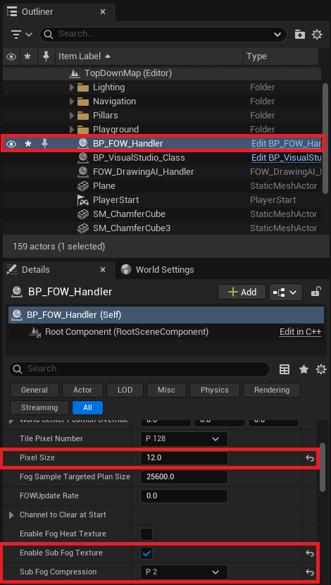
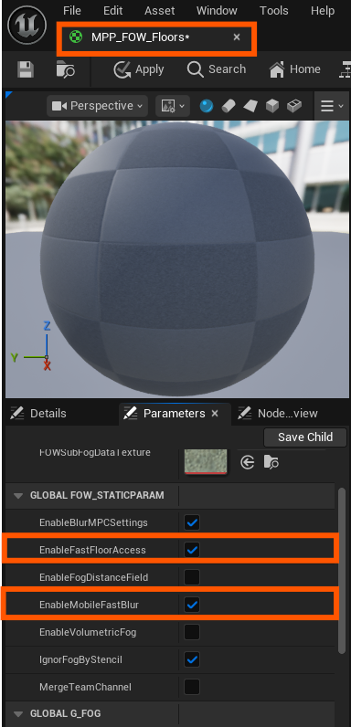
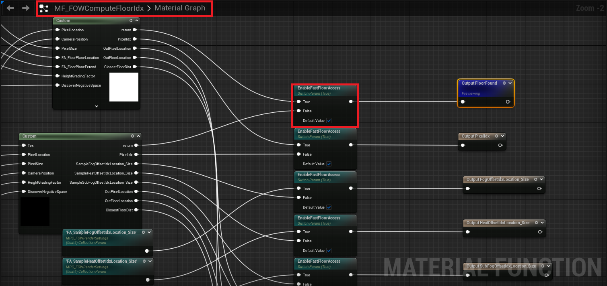
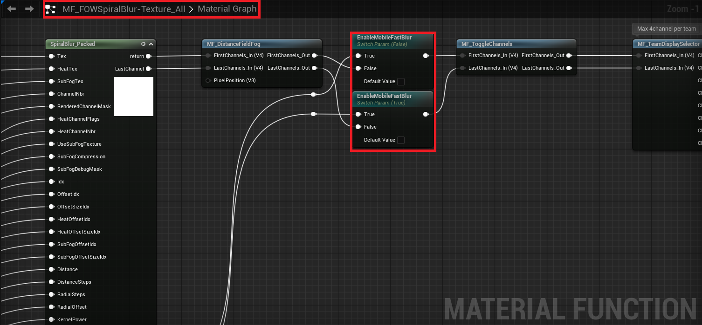
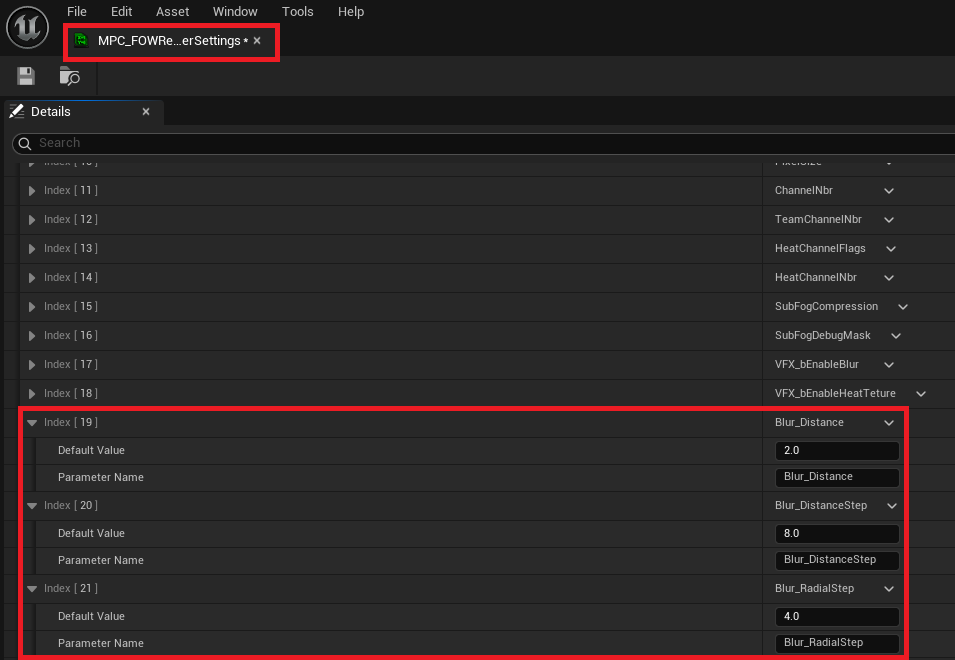
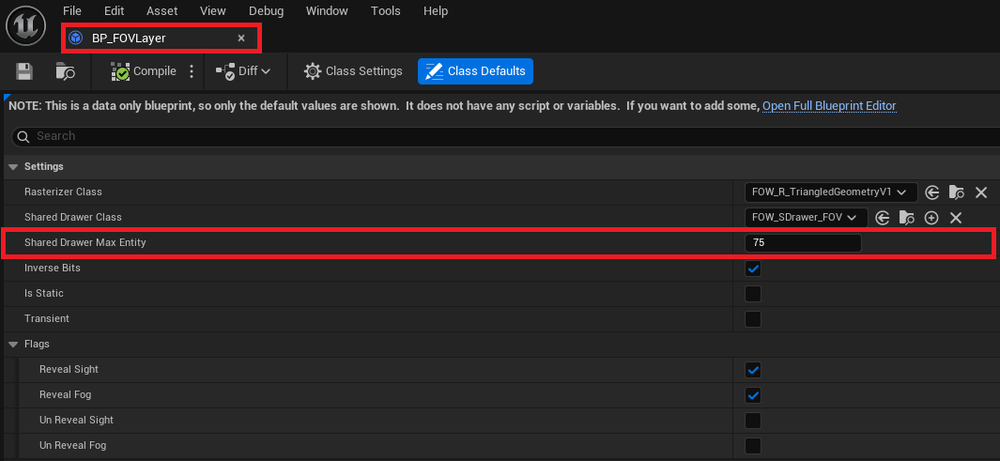
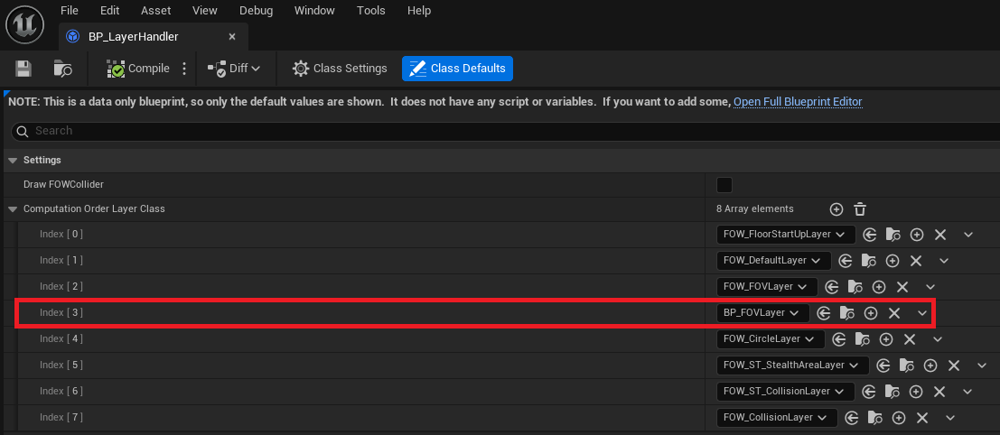
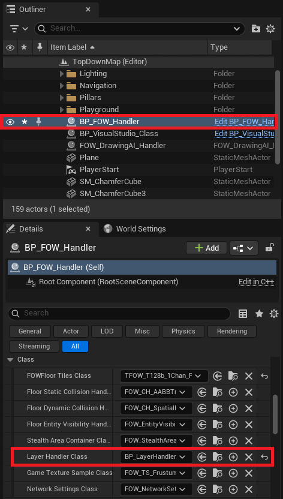
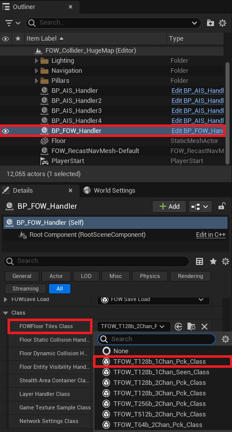

Android
This tutorial explains how to enable LFOW for an Android project. However, all the provided instructions can also apply to laptops or consoles.
It requires LFOW v1.5.0 and a complete Android setup (Android Studio, SDK, NDK, JDK, etc...).
Supporting Android is challenging, not because of the CPU, but due to the GPU load. Texture sampling and dynamic branching are too heavy for most mobile GPUs. To reduce usage, certain features have been disabled for mobile. If you follow this tutorial, the following features will not be available:
Multifloor: Previously used textures to pass data; this is replaced withMaterial Parameter Collections.4 Channels: Reduced to limit dynamic branches.SubFog mandatory:Sub Fog Texturemust be enabled. Dynamic branching to toggle it has been removed.Stylized Fog: Disabled due to excessive texture sampling.Debug Commands:FOW.r.SubFogDebugMaskno longer works withSub Fog Texture.
Note: All suggested values are not final. They should be adjusted based on profiling results and performance tuning.
Unreal Engine Setup
I based my setup on this video, and everything worked as expected.
I also installed the Android Game Development Extension, though USB debugging worked better in my case.
By following the video, you should have:
- Installed
Android Studio - Installed
SDK,NDK&Command Line Tools - Enabled
Androidsupport inUE5 - Verified your
Environment Variables - Run
SetupAndroid.batto configure your environment
Plugin Setup
Now that everything is ready, let's adjust the plugin to reduce GPU load. The goal is to minimize the number of texture samples.
- Remove the
MultiFloorfeature and replace it with a fast-accessSingleFloorsystem - Use a simplified version of the
Bluralgorithm.Sub Fog Texturebecomes mandatory, only4 Channelssupported, and debug commands will no longer work - Reduce blur complexity using the
MPCvariables, which affects visual quality but improves performance - Lower
PixelSizeto increase pixel density and improve visual clarity
Handler
Let's start with the FOWHandler settings:
- Ensure that
EnableSubFogTextureis checked doc - Set
SubFogCompressionto 2 - Reduce
PixelSizeto 12
Finding the right balance here is key. The Sub Fog Texture is a really powerful tool, the smaller the SubFogCompression and PixelSize values, the better
the performance. However,lowering PixelSize too much can strain the CPU.

Material
Now let's modify the materials. There are two ways to enable GPU optimization:
- You can apply the modifications directly in each
MaterialandMaterial Instanceyou're using - Or you can apply them in the plugin's
Material Function. /!\ Be careful, these changes will be reset every time the plugin is updated /!\
Let's start with the first approach. Open MPP_FOW_Floors and in the parameter list, toggle:
EnableFastFloorAccess: Floor data will now be sent viaMPCvector parameters instead of through a textureEnableMobileFastBlur: The blur will include fewer features and fewer dynamic branches, which improves performance

If you want to change the default values in the Material Function, open MF_FOWComputeFloorIdx and set EnableFastFloorAccess to true.

Then open MF_FOW_SpiralBlur-Texture_All and set EnableMobileFastBlur to true.

Now that the materials are ready, let's reduce the blur complexity:
BlurDistancemust always be <= theSubFogCompressionvalue set in the FOWHandler- Set
Blur_DistanceStepto 8 - Set
Blur_RadialStepto 4
To get an idea of how expensive the blur is: multiply Blur_DistanceStep by Blur_RadialStep. That's the number of texture samples per pixel rendered on screen.

Entities
Finally, if you want to support a large number of entities, it's a good idea to tweak the Layer system a bit.The goal is to
reduce the number of entities processed in a single thread/task.
Create a new Blueprint child of FOW_FOVLayer and call it BP_FOVLayer. Once opened, set SharedDrawerMaxEntities to 75.

Next, create a new Blueprint child of FOW_LayerHandler, unless you already have one for your game. Call it BP_LayerHandler.
Once opened, add a row to ComputationLayerOrderClass and assign your new BP_FOVLayer. Don't forget to reorder it to fit the screen layout or your game logic.

Finally, change the LayerHandler_Class used by the FOW_Handler.

You should now be able to build your application with the plugin enabled and get good performance!
Single Channel
Another good way to reduce GPU usage is to design your game to use a Single Channel like a typical MOBA style Fog of War.
To enable this setup, change the FOWFloor Tiles Class in the FOW_Handler to TFOW_T128b_1Chan_PCK_Class.

Documentation built with Unreal-Doc v1.0.9 tool by PsichiX